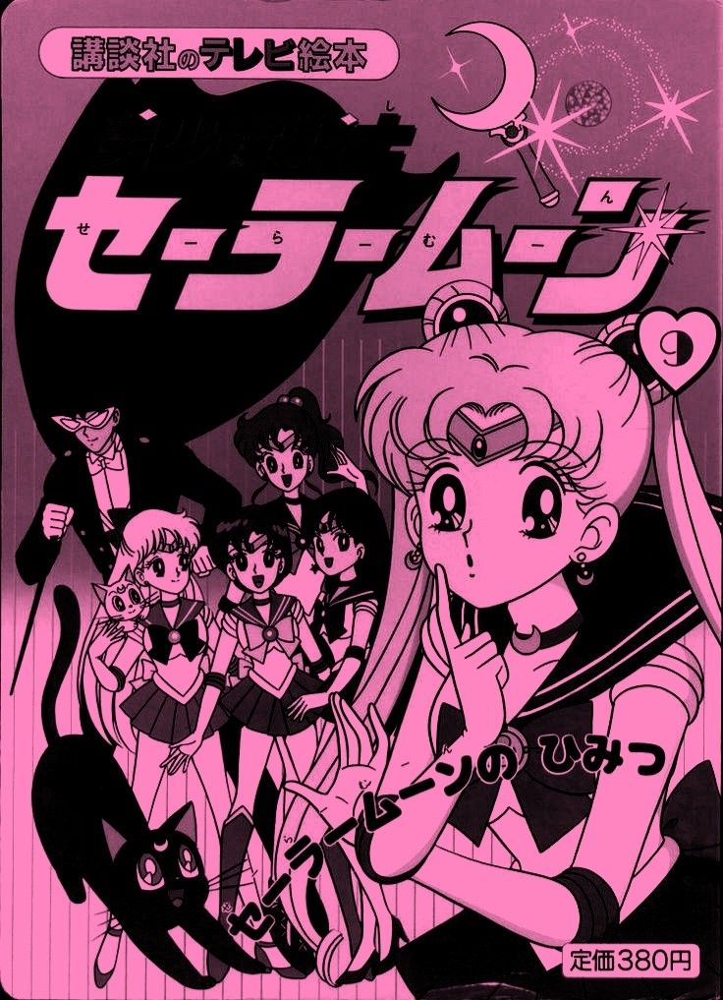

The Story of Sailor Moon
"Sailor Moon" is a legendary Japanese manga and anime series created by Naoko Takeuchi. The story follows a group of magical warrior girls, known as the Sailor Guardians, who are destined to protect Earth and the entire cosmos from dark and malevolent forces. At the heart of the story is Usagi Tsukino, an ordinary and clumsy middle school girl whose life takes a dramatic turn when she encounters Luna, a mysterious talking black cat. Luna reveals Usagi’s true identity as Sailor Moon, the guardian of love and justice. As she learns to embrace her newfound powers, she meets other Sailor Guardians—Sailor Mercury, Sailor Mars, Sailor Jupiter, and Sailor Venus—who become her closest allies in battle and in life. Together, they embark on a journey to uncover the secrets of their past lives, the Moon Kingdom, and their true destinies. As the story progresses, more powerful warriors and celestial beings join their ranks, including the enigmatic Tuxedo Mask, the Outer Sailor Guardians, and Sailor Chibi Moon. Each character brings unique abilities and personalities, forming a team bonded by friendship, courage, and unwavering determination. "Sailor Moon" is more than just a story about battles between good and evil. It beautifully weaves together themes of love, self-discovery, female empowerment, and destiny, inspiring generations of fans around the world. With its mix of romance, action, comedy, and heartfelt moments, this timeless masterpiece continues to shine as one of the most beloved magical girl series of all time.
Interesting facts about Sailor Moon
- "Sailor Moon" was first serialized in "Nakayoshi" magazine in 1991 and was later adapted into an animation.
- The five main fighters represent the planets in the solar system, and each character's abilities are related to the astrological signs.
- This work inspired many subsequent magical girl-type animations.
- The classic line "I will punish you on behalf of the moon!" has become one of the representative lines in the anime industry.